The original, as published: Tony R. Kuphaldt, Lessons In Industrial Instrumentation, Thermistors and RTDs. CC BY 4.0, https://creativecommons.org/licenses/by/4.0/. Imported as published, from https://www.ibiblio.org/kuphaldt/socratic/sinst/book/liii.pdf https://www.ibiblio.org/kuphaldt/socratic/sinst/book/liii.pdf
(RTDs)
One of the simplest classes of temperature sensor is one where temperature effects a change in electrical resistance. With this type of primary sensing element, a simple ohmmeter is able to function as a thermometer, interpreting the resistance as a temperature measurement:
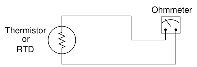
Thermistors are devices made of metal oxide which either increase in resistance with increasing temperature (a positive temperature coefficient) or decrease in resistance with increasing temperature (a negative temperature coefficient). RTDs are devices made of pure metal wire (usually platinum or copper) which always increase in resistance with increasing temperature. The major difference between thermistors and RTDs is linearity: thermistors are highly sensitive and nonlinear, whereas RTDs are relatively insensitive but very linear. For this reason, thermistors are typically used where high accuracy is unimportant. Many consumer-grade devices use thermistors for temperature sensors.
Temperature coefficient of resistance (α)
21.3.1
A Resistive Temperature Detector (RTD) is a special temperature-sensing element made of fine metal wire, the electrical resistance of which changes with temperature as approximated by the following formula:
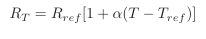
Where, RT = Resistance of RTD at given temperature T (ohms) Rref = Resistance of RTD at the reference temperature Tref (ohms) α = Temperature coefficient of resistance (ohms per ohm/degree)
The following example shows how to use this formula to calculate the resistance of a “100 ohm” platinum RTD with a temperature coefficient value of 0.00392 at a temperature of 35 degrees Celsius:
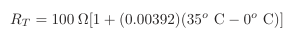
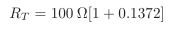
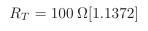
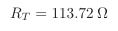
Due to nonlinearities in the RTD’s behavior, this linear RTD formula is only an approximation. A better approximation is the Callendar-van Dusen formula, which introduces second, third, and fourth-degree terms for a better fit: RT = Rref(1 + AT + BT 2 −100CT 3 + CT 4) for temperatures ranging −200 oC < T < 0 oC and RT = Rref(1 + AT + BT 2) for temperatures ranging 0 oC < T <
661 oC, both assuming Tref = 0 oC. The A, B, and C coefficients vary with the specific type of RTD, equivalent in role to α in the linear RTD formula.
Water’s melting/freezing point is the standard reference temperature for most RTDs. Here are some typical values of α for common metals:
As mentioned previously, platinum is a common wire material for industrial RTD construction. The alpha (α) value for platinum varies according to the alloying of the metal. For “reference grade” platinum wire, the most common alpha value is 0.003902. Industrial-grade platinum alloy RTD wire is commonly available in two different coefficient values: 0.00385 (the “European” alpha value) and 0.00392 (the “American” alpha value), of which the “European” value of 0.00385 is most commonly used (even in the United States!). An alternative to mathematically predicting the resistance of an RTD is to simply look up its predicted resistance versus temperature in a table of values published for that RTD type. Tables capture the nuances of an RTD’s non-linearity without adding any mathematical complexity: simply look up the resistance corresponding to a given temperature, or vice-versa. If a value falls between two nearest entries in the table, you may interpolate the find the desired value, regarding the two nearest table entries as end-points defining a line segment, calculating the point you desire along that line.
100 Ωis a very common reference resistance (Rref at 0 degrees Celsius) for industrial RTDs. 1000 Ωis another common reference resistance, and some industrial RTDs have reference resistances as low as 10 Ω. Compared to thermistors with their tens or even hundreds of thousands of ohms’ resistance, an RTD’s resistance is comparatively small. This can cause problems with measurement, since the wires connecting an RTD to its ohmmeter possess their own resistance, which will be a more substantial percentage of the total circuit resistance than for a thermistor.
The following schematic diagrams show the relative effects of 2 ohms total wire resistance on a thermistor circuit and on an RTD circuit:
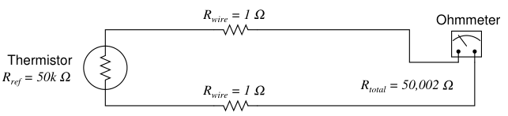
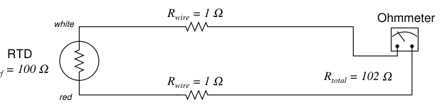
As you can see, wire resistance adds to the sensing element’s resistance to create a larger total circuit resistance which will be interpreted by the receiving instrument (ohmmeter) as a falsely high temperature reading, assuming a positive temperature coefficient of resistance for the sensing element. Clearly, wire resistance is more problematic for low-resistance RTDs than for high-resistance thermistors. In the RTD circuit, wire resistance constitutes 1.96% of the total circuit resistance. In the thermistor circuit, the same 2 ohms of wire resistance constitutes only 0.004% of the total circuit resistance. The thermistor’s huge reference resistance value “swamps”2 the wire resistance to the point that the latter becomes insignificant by comparison. In HVAC (Heating, Ventilation, and Air Conditioning) systems, where the temperature measurement range is relatively narrow, the nonlinearity of thermistors is not a serious concern and their relative immunity to wire resistance error is a definite advantage over RTDs. In industrial temperature measurement applications where the temperature ranges are usually much wider, the nonlinearity of thermistors becomes a significant problem, so we must find a way to use low-resistance RTDs and deal with the (lesser) problem of wire resistance.
2“Swamping” is the term given to the overshadowing of one effect by another. Here, the normal resistance of the thermistor greatly overshadows (“swamps”) any wire resistance in the circuit, such that wire resistance becomes negligible.
A very old electrical measurement technique known as the Kelvin or four-wire method is a practical solution to the problem of wire resistance. Commonly employed to make precise resistance measurements for scientific experiments in laboratory conditions, the four-wire technique uses four wires to connect the resistance under test (in this case, the RTD) to the measuring instrument, which consists of a voltmeter and a precision current source. Two wires carry “excitation” current to the RTD from the current source while the other two wires merely “sense” voltage drop across the RTD resistor element and carry that voltage signal to the voltmeter. RTD resistance is calculated using Ohm’s Law: taking the measured voltage displayed by the voltmeter and dividing that figure by the regulated current value of the current source. A simple 4-wire RTD circuit is shown here for illustration:
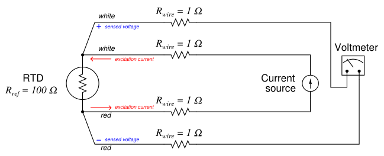
Wire resistances are completely inconsequential in this circuit. The two “excitation” wires carrying current to the RTD will drop some voltage along their length, but this voltage drop is only “seen” by the current source and not the voltmeter. The two “sense” wires connecting the voltmeter to the RTD also possess resistance, but they drop negligible voltage because the voltmeter draws so little current through them3. Thus, the resistances of the current-carrying wires are of no effect because the voltmeter never senses their voltage drops, and the resistances of the voltmeter’s sensing wires are of no effect because they carry practically zero current. Note how wire colors (white and red) indicate which wires are common pairs at the RTD. The RTD is polarity-insensitive because it is nothing more than a resistor, which is why it doesn’t matter which color is positive and which color is negative. The only disadvantage of the four-wire method is the sheer number of wires necessary. Four wires per RTD can add up to a sizeable wire count when many different RTDs are installed in a process area.
3Remember that an ideal voltmeters has infinite input impedance, and modern semiconductor-amplified voltmeters have impedances of several mega-ohms or more.
A compromise between two-wire and four-wire RTD connections is the three-wire connection, which looks like this:
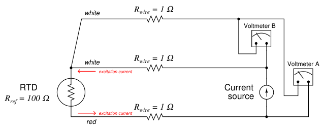
In a three-wire RTD circuit, voltmeter “A” measures the voltage dropped across the RTD plus the voltage dropped across the bottom current-carrying wire. Voltmeter “B” measures just the voltage dropped across the top current-carrying wire. Assuming both current-carrying wires will have (very nearly) the same resistance, subtracting the indication of voltmeter “B” from the indication given by voltmeter “A” yields the voltage dropped across the RTD:
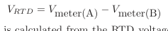
Once again, RTD resistance is calculated from the RTD voltage and the known current source value using Ohm’s Law, just as it is in a 4-wire circuit. If the resistances of the two current-carrying wires are precisely identical (and this includes the electrical resistance of any connections within those current-carrying paths, such as terminal blocks), the calculated RTD voltage will be the same as the true RTD voltage, and no wire-resistance error will appear. If, however, one of those current-carrying wires happens to exhibit more resistance than the other, the calculated RTD voltage will not be the same as the actual RTD voltage, and a measurement error will result. Thus, we see that the three-wire RTD circuit saves us wire cost over a four-wire circuit, but at the “expense” of a potential measurement error. The beauty of the four-wire design was that wire resistances were completely irrelevant: a true determination of RTD voltage (and therefore RTD resistance) could be made regardless of how much resistance each wire had, or even if the wire resistances were different from each other. The error-canceling property of the three-wire circuit, by contrast, hinges on the assumption that the two current-carrying wires have exactly the same resistance, which may or may not actually be true. It should be understood that real three-wire RTD instruments do not employ direct-indicating voltmeters as shown in these simplified examples. Actual RTD instruments use either analog or digital “conditioning” circuits to measure the voltage drops and perform the necessary calculations to compensate for wire resistance. The voltmeters shown in the four-wire and three-wire diagrams serve only to illustrate the basic concepts, not to showcase practical instrument designs. A practical electronic circuit for a 3-wire RTD sensor is shown here (differential voltages shown in blue, ground-referenced voltages shown in red):
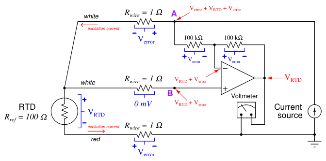
Note that the voltage appearing at point B with reference to ground is the RTD’s voltage plus the voltage dropped by the lower current-carrying wire: VRT D + Verror. It is this “error” voltage we must eliminate in order to achieve an accurate measurement of RTD voltage drop, essential for accurately inferring RTD temperature. The voltage appearing at point A is greater by the upper wire’s voltage drop (Verror + VRT D + Verror) because that point spans one more wire resistance in the circuit than point B4. Like all negative-feedback operational amplifier circuits, the amplifier does its best to maintain the two input terminals at (nearly) the same voltage. Thus, the voltage at point B is duplicated at the inverting input terminal by the amplifier’s feedback action. From this we may see that the voltage drop across the left-hand 100 kΩresistor is simply Verror: the potential difference between point A and point B. The feedback current driving through this resistor goes through the other 100 kΩfeedback resistor equally, causing the same voltage drop to appear there (Verror). We may see that the polarity of this second resistor’s voltage drop ends up subtracting that quantity from the voltage appearing at the inverting input terminal. The inverting terminal voltage (VRT D + Verror) minus the right-hand 100 kΩresistor’s voltage drop (Verror) is simply VRT D, and so the voltmeter registers the true RTD voltage drop without any wire resistance error. Like the dual-voltmeter circuit shown previously, this amplified 3-wire RTD sensing circuit “assumes” the two current-carrying wires will have the exact same resistance and therefore drop
4Note that the middle wire resistance is of no effect because it does not carry the RTD’s current. The amount of current entering or exiting an operational amplifier is assumed to be zero for all practical purposes. the same amount of voltage. If this is not the case, and one of these wires drops more voltage than the other, the circuit will fail to yield the exact RTD voltage (VRT D) at the amplifier output. This is the fundamental limitation of any 3-wire RTD circuit: the cancellation of wire resistance is only as good as the wires’ resistances are precisely equal to each other.
A photograph of a modern temperature transmitter capable of receiving input from 2-wire, 3wire, or 4-wire RTDs (as well as thermocouples, another type of temperature sensor entirely) shows the connection points and the labeling describing how the sensor is to be connected to the appropriate terminals:
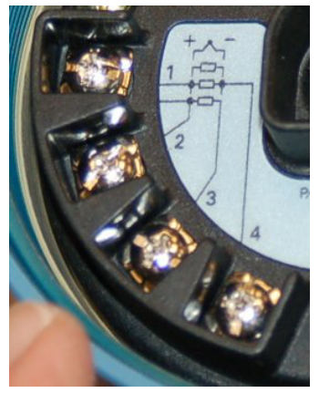
The rectangle symbol shown on the label represents the resistive element of the RTD. The symbol with the “+” and “−” marks represents a thermocouple junction, and may be ignored for the purposes of this discussion. As shown by the diagram, a two-wire RTD would connect between terminals 2 and 3. Likewise, a three-wire RTD would connect to terminals 1, 2, and 3 (with terminals
1 and 2 being the points of connection for the two common wires of the RTD). Finally, a four-wire RTD would connect to terminals 1, 2, 3, and 4 (terminals 1 and 2 being common, and terminals 3 and 4 being common, at the RTD). Once the RTD has been connected to the appropriate terminals of the temperature transmitter, the transmitter needs to be electronically configured for that type of RTD. In the case of this particular temperature transmitter, the configuration is performed using a “smart” communicator device using the HART digital protocol to access the transmitter’s microprocessor-based settings. Here, the technician would configure the transmitter for 2-wire, 3-wire, or 4-wire RTD connection.